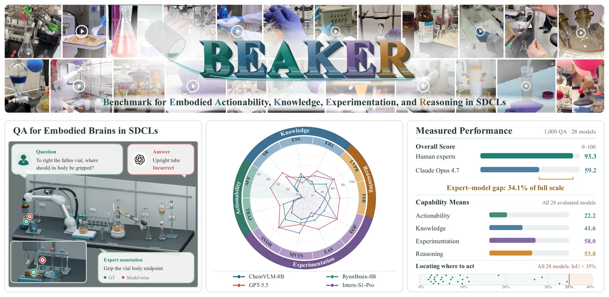
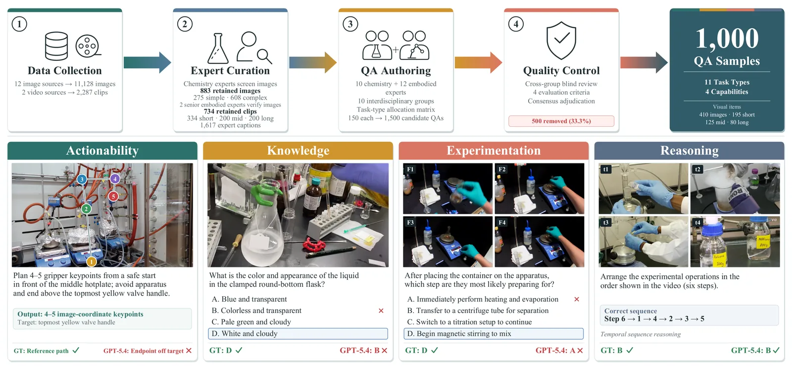
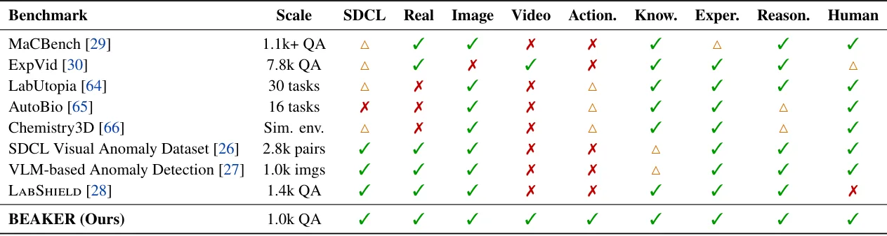
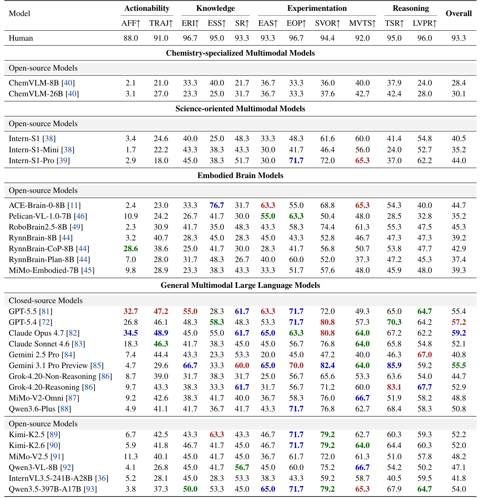

O Desafio da Automação Química Real
Os Laboratórios Químicos Autônomos (SDCLs, na sigla em inglês) estão transformando a descoberta científica. Em vez de depender de tentativa e erro manual, esses sistemas usam dispositivos automatizados para executar experimentos, observar resultados e usar feedback de dados para guiar operações subsequentes. No centro desse sistema está o que os autores chamam de 'cérebro embutido': um Modelo de Linguagem Multimodal (MLLM) que conecta a percepção visual ao raciocínio de ação, considerando restrições físicas, procedurais e de segurança.
O problema é que a maioria dos benchmarks existentes para MLLMs foca em segurança, detecção de anomalias ou compreensão científica geral. Eles não avaliam a capacidade executiva real necessária para um robô operar em um laboratório. Reconhecer um frasco de Erlenmeyer não é suficiente; o modelo precisa saber se ele está pronto para operar, se a conexão suporta o próximo passo e se uma mudança de estado indica progresso ou falha.
Para preencher essa lacuna, os autores introduzem o BEAKER (Benchmark for evaluating Embodied Actionability, Knowledge, Experimentation, and Reasoning). É um conjunto de dados curado por especialistas humanos, sem geração ou anotação assistida por IA, projetado para diagnosticar se os MLLMs podem passar da compreensão de cena para o raciocínio fundamentado na execução.

Como o BEAKER é Construído
A construção do BEAKER é intencionalmente rigorosa e manual. O pipeline consiste em quatro etapas: coleta de dados, curadoria por especialistas, autoria de perguntas e respostas (QA) e controle de qualidade. Diferente de benchmarks modernos que usam LLMs para gerar amostras sintéticas, o BEAKER depende exclusivamente de químicos e especialistas em IA embutida para criar 1.000 amostras de QA.
O benchmark cobre 11 tipos de tarefas, divididas em duas modalidades: imagens e vídeos. As tarefas são agrupadas em quatro dimensões de capacidade principais: Ação (Actionability), Conhecimento (Knowledge), Experimentação (Experimentation) e Raciocínio (Reasoning). Cada dimensão tem um peso diferente na pontuação final, refletindo a importância relativa dessas habilidades na execução de laboratório.
Os autores destacam que a curadoria manual garante que as questões reflitam nuances reais do laboratório, como o nível exato de um líquido ou o estado de conexão de um tubo, que são contextuais e não podem ser generalizados facilmente. Isso contrasta com benchmarks anteriores que frequentemente usam dados genéricos ou simulados, falhando em capturar a complexidade física da química.

As Quatro Dimensões de Avaliação
O BEAKER decompõe a execução do laboratório em quatro pilares. O primeiro é Ação (Actionability), que avalia a capacidade do modelo de determinar onde agir. Isso inclui o 'Affordance Grounding' (AFG), que pergunta onde agarrar um objeto (como o corpo de um frasco) e o Planejamento de Trajetória (TRAJ), que exige identificar caminhos viáveis para movimentos robóticos. Aqui, a métrica é baseada na sobreposição (IoU) da região de ação prevista versus a correta.
O segundo pilar é Conhecimento (Knowledge). Ele avalia a identificação de equipamentos e reagentes (ERI) e o reconhecimento de estados experimentais (SR). Um modelo precisa saber não apenas o nome do equipamento, mas seu estado atual (cheio, vazio, conectado). Também inclui Segurança Experimental e Padronização (ESS), verificando se o modelo reconhece normas de segurança críticas no ambiente.
O terceiro pilar é Experimentação (Experimentation). Este é o mais pesado em termos de peso na pontuação final (0,35). Ele cobre a configuração de aparatos experimentais (EAS), operações experimentais (EOP) e raciocínio sobre operações em vídeos curtos (SVOR) e médios (MVTS). A ênfase aqui está na sequência lógica de passos físicos necessários para realizar um experimento.
O quarto pilar é Raciocínio (Reasoning). Focado em tarefas de vídeo longo, avalia o Raciocínio de Sequência Temporal (TSR) e o Raciocínio de Procedimento Experimental de Vídeo Longo (LVPR). O modelo deve entender a progressão temporal de um experimento complexo, inferindo o estado atual e o próximo passo provável com base em uma sequência temporal extensa.
Metodologia de Avaliação
Os autores avaliaram 28 MLLMs distintos, incluindo modelos de propósito geral (como GPT-5.5 e Claude Opus), modelos orientados à ciência, especializados em química e modelos de cérebro embutido. A avaliação foi realizada offline, em configurações de QA de turno único, utilizando prompts padronizados e formatos de saída específicos para cada tarefa.
Os modelos foram testados via APIs remotas ou implantação local em 16 GPUs NVIDIA A100. Para vídeos, a amostragem de frames foi cuidadosamente configurada: 8 frames para vídeos curtos, 32 para vídeos médios e 128 frames organizados em 32 grids de quatro frames para vídeos longos. A temperatura foi fixada em 0,7 quando configurável, e as imagens foram inseridas em sua resolução original.
Para estabelecer uma linha de base humana, três especialistas em química, não envolvidos na criação do benchmark, responderam a todas as 1.000 perguntas independentemente. A pontuação humana média foi de 93,3. A pontuação final do BEAKER agrega as pontuações das tarefas hierarquicamente, com pesos definidos por consenso de especialistas para refletir a importância relativa de cada capacidade na execução de laboratório.

Resultados: Especialistas vs. Generalistas
Os resultados revelaram uma descoberta contraintuitiva: modelos de propósito geral superaram consistentemente modelos especializados em química. O GPT-5.5 atingiu a maior pontuação geral (55,4), seguido pelo Claude Opus 4.7 (59,2 na escala normalizada, mas com desempenho geral inferior ao GPT em algumas métricas específicas de ação). Modelos como ChemVLM-8B e ChemVLM-26B, treinados especificamente para química, tiveram desempenhos muito abaixo da média, com pontuações gerais em torno de 28-30.
Isso sugere que a base multimodal robusta e o raciocínio geral dos modelos de grande escala são mais valiosos para tarefas executivas complexas do que o conhecimento de domínio químico isolado. O conhecimento químico pode ser recuperado via RAG (Recuperação Aumentada por Geração) ou instruções, mas a capacidade de perceber nuances visuais e planejar ações físicas parece depender da arquitetura geral do modelo.
Modelos de 'cérebro embutido' (como ACE-Brain e RoboBrain) mostraram melhorias em tarefas específicas de ação em relação a seus modelos base, mas essas melhorias foram limitadas a tarefas específicas e não se traduziram em uma vantagem geral significativa contra os modelos de propósito geral.

Análise das Falhas: Onde os Modelos Falham
Uma análise detalhada das pontuações por dimensão expõe as fraquezas específicas dos modelos. A dimensão de Ação (Actionability) foi a mais baixa, com média de 22,2 em todos os 28 modelos. Isso confirma que o 'Affordance Grounding' e o 'Trajectory Planning' são os maiores gargalos. Os modelos falham em localizar regiões operáveis com precisão (IoU < 35%).
A dimensão de Conhecimento (Knowledge) teve média de 41,6. Os modelos tiveram dificuldade em reconhecer equipamentos de laboratório de granularidade fina e estados de segurança. Isso é crítico, pois um erro de reconhecimento pode levar a acidentes ou falhas experimentais silenciosas.
Experimentação (58,0) e Raciocínio (53,8) tiveram desempenhos moderados. Os modelos conseguem seguir procedimentos experimentais grosseiros em vídeos, mas lutam para ordenar passos em procedimentos de comprimento médio e para reconhecer estados sutis. A lacuna entre a compreensão procedural bruta e a percepção precisa fundamentada na ação é clara.
Limitações e Direções Futuras
O BEAKER tem limitações inerentes. A avaliação é offline e em turno único, o que não captura a natureza iterativa e de loop fechado dos laboratórios autônomos reais. Um modelo pode responder corretamente a uma pergunta isolada, mas falhar em corrigir erros ao longo de uma sequência de experimentos. Além disso, o uso de amostragem de frames para vídeos pode perder detalhes temporais finos que são críticos para a segurança e a precisão.
Os autores reconhecem que a curadoria manual, embora garantisse qualidade, limitou o tamanho do conjunto de dados a 1.000 amostras. Expansões futuras podem envolver a criação de ambientes de simulação química para avaliação em loop fechado, onde os modelos interagem com um simulador de laboratório e recebem feedback real sobre o sucesso das ações.
Outra limitação é o viés potencial dos especialistas humanos na criação das questões. Embora o processo tenha sido rigoroso, a diversidade de protocolos experimentais e equipamentos pode não estar totalmente representada. O benchmark foca em química clássica de laboratório, e pode não ser diretamente aplicável a novas áreas, como química de fluxo contínuo ou biologia sintética complexa, sem adaptações.
Conclusão
O BEAKER estabelece um novo padrão para avaliar MLLMs em contextos de automação científica. Ao focar na execução fundamentada na ação, ele revela que a compreensão visual e o conhecimento de domínio não são suficientes para a robótica de laboratório. A capacidade de 'afordância' e planejamento de trajetória é o próximo grande obstáculo a ser superado.
Para desenvolvedores e cientistas de dados que trabalham com IA embutida, o BEAKER serve como um diagnóstico claro: otimize seus modelos para a percepção de ação fina e não apenas para o reconhecimento de objetos. A lacuna entre o que os modelos sabem e o que eles podem fazer fisicamente é vasta, e preencher essa lacuna exigirá avanços na integração de percepção multimodal com planejamento de ação física.
O que fica
- BEAKER é o primeiro benchmark curado por especialistas para avaliar MLLMs como 'cérebros' em laboratórios químicos autônomos, focando em execução, não apenas em segurança.
- Modelos de propósito geral superam modelos especializados em química, revelando que a base multimodal é mais crucial que o domínio específico para tarefas executivas.
- A principal falha dos modelos atuais é o 'Affordance Grounding': eles identificam objetos, mas não sabem onde agarrar ou como planejar trajetórias físicas viáveis.
- Existe uma lacuna de 34,1 pontos na escala de 0-100 entre o melhor modelo (GPT-5.5) e humanos, indicando que a automação total ainda está distante.
Paper original: BEAKER: An Expert-Curated Benchmark for Embodied Brains in Self-Driving Chemical Laboratories
Comentários
Nenhum comentário ainda. Seja o primeiro.